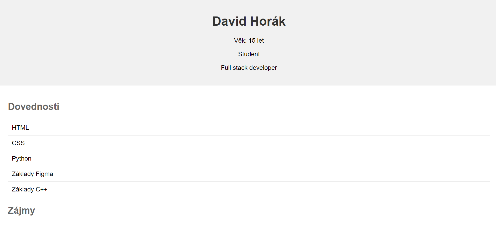

Tato stránka je zatím nejhezčí stránka co jsem kdy udělal, a to hlavně kvůli tomu, že když se mi podaří ji udělat dost dobře, tak mě zachrání od další poloviny roku strávené učením se na příjimací zkoušky. HTML kód můžete vidět na mém Githubu.
Programovací jazyky HTML a CSS mají tuto sekci společně protože by CSS samo o sobě nefungovalo.
Portfolio 2.0 (Tato stránka)
Portfolio

Toto bylo moje první portfolio, ze kterého jsem byl šťastný, když jsem ho tvořil, ale nyní už vím že se dá udělat i mnohem lépe. HTML kód pro stránku je stále na mém Githubu.